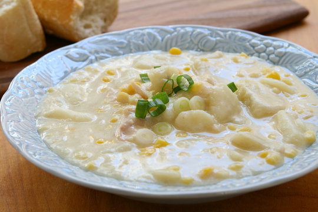

Slow Cooker Corn Chowder

Description
Delicious creamy corn chowder with a bit of a kick!
This chowder has potatoes, ham and green chilis which give it a nice
spicy yet flavorful profile. Try mixing it up by adding your favourite ingredients.
Ingredients
- 3 cups milk
- 2 cans cream corn
- 2 cans cream of mushroom soup
- 2 cans chopped green chilis
- 2 cups cubed potatoes
- 2 cups cubed ham
- 2 cups frozen corn
- 1 large onion chopped
- 2 tablespoons hot sauce
- 2 tablesppons butter
- 1 teaspoon chili powder
- 2 teaspoons parsley
- salt and pepper to taste
- 2 green onions to garnish
Steps
- Chop green onions
- Combine all ingredients except green onions in a slow cooker
- Cover and cook on High for 4hrs or Low for 6hrs
- Serve and garnish with green onions
Return to main page